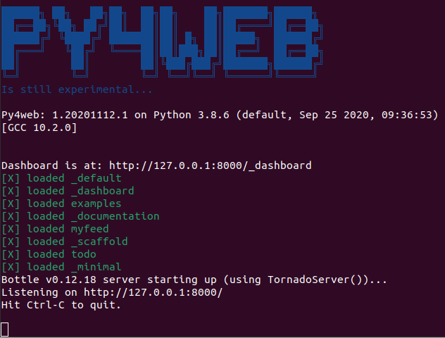
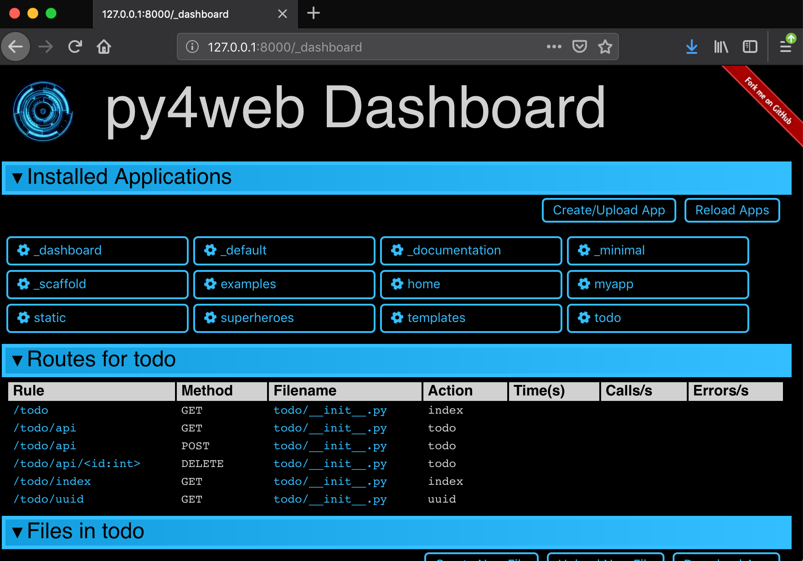
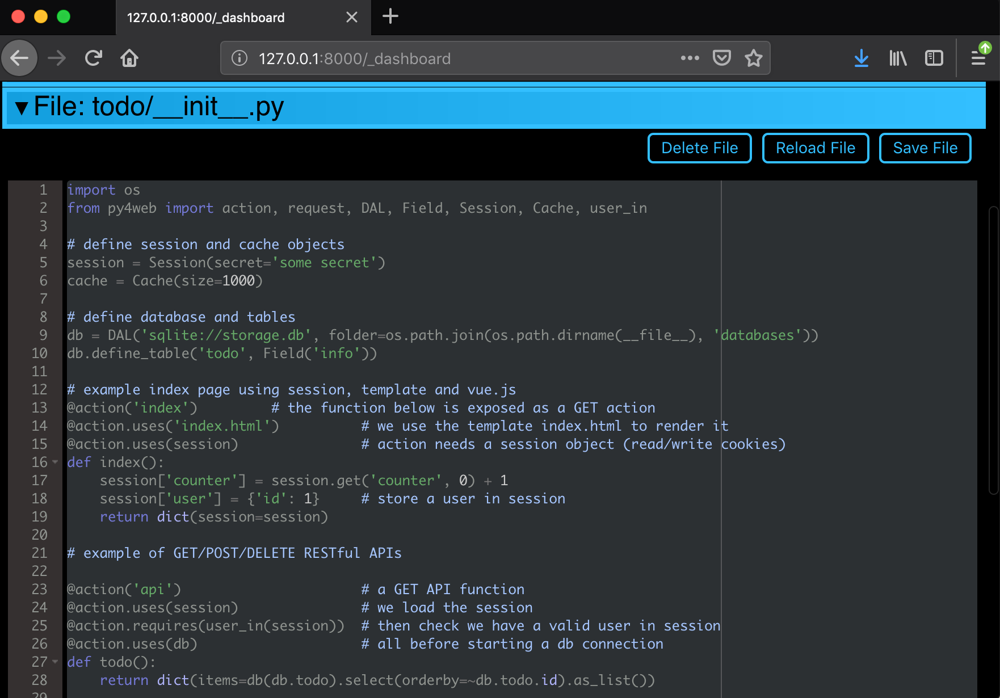
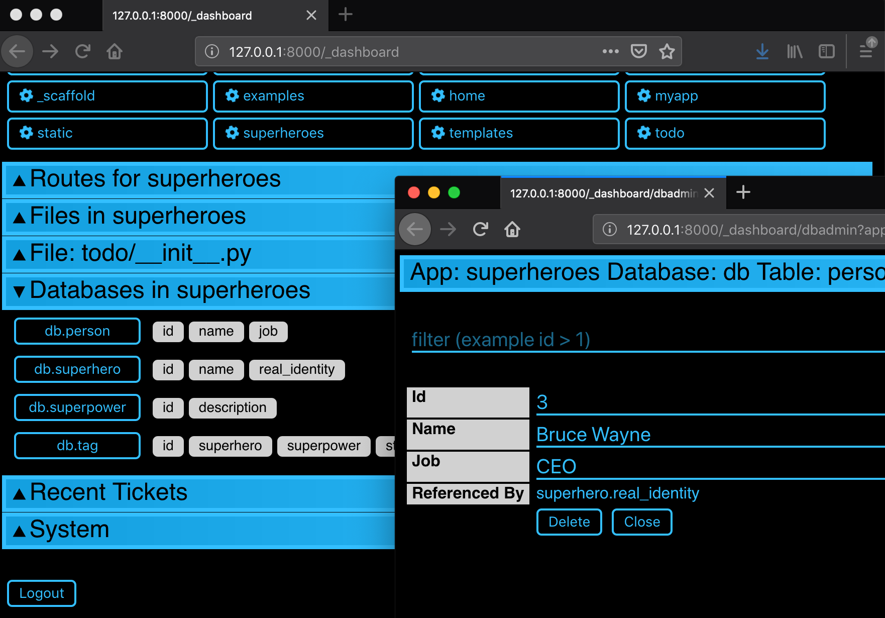

What is py4web?¶

PY4WEB is a web framework for rapid development of efficient database driven web applications. It is an evolution of the popular web2py framework but much faster and slicker.
Main web site: https://py4web.com
GitHub repository: https://github.com/web2py/py4web
Official documentation site: https://py4web.com/_documentation
License: BSD-3-Clause License
Screenshots¶
Running py4web
The main Dashboard
Editing a file in the Dashboard
Editing a database in the Dashboard
Installation¶
PY4WEB runs fine on Windows, MacOS and Linux. There are many installation procedures (see the official documentation for details) but only two of them are summarized here.
The simplest way to install py4web is using binaries, but it’s only available for Windows and MacOS. It’s meant especially for newbies or students, because it does not require Python pre-installed on your system nor administrative rights. You just need to download the latest Windows or MacOS ZIP file from this external repository. Unzip it on a local folder and open a command line there. Finally run the commands (omit “./” if you’re using Windows)
./py4web-start set_password
./py4web-start run apps
The standard installation procedure for py4web on Windows, MacOS and Linux is using pip. Its only prerequisite is Python 3.6+.
python3 -m pip install --upgrade py4web --no-cache-dir --user
but do not type the “”–user”” option with virtualenv or a standard Windows installation which is already per-user. Also, if “”python3”” does not work, try with the simple “”python”” command instead.
This will install the latest stable release of py4web and all its dependencies on the system’s path only. After the installation you’ll be able to start py4web on any given working folder with
py4web setup apps
py4web set_password
py4web run apps
Launch Arguments¶
# py4web run -h
Usage: py4web.py run [OPTIONS] [APPS_FOLDER]
Run all the applications on apps_folder
Options:
-Y, --yes No prompt, assume yes to questions [default:
False]
-H, --host TEXT Host name [default: 127.0.0.1]
-P, --port INTEGER Port number [default: 8000]
-p, --password_file TEXT File for the encrypted password [default:
password.txt]
-w, --number_workers INTEGER Number of workers [default: 0]
-d, --dashboard_mode TEXT Dashboard mode: demo, readonly, full
(default), none [default: full]
--watch [off|sync|lazy] Watch python changes and reload apps
automatically, modes: off (default), sync,
lazy
--ssl_cert PATH SSL certificate file for HTTPS
--ssl_key PATH SSL key file for HTTPS
-help, -h, --help Show this message and exit.
Example:
py4web run -H 127.0.0.1 -P 8000 -d demo apps
Note that since the default (as specified above) for the host and port are 127.0.0.1 and 8000 respectively, the above command can be shortened to:
py4web run -d demo apps
Tell me more¶
this is a work in progress and not stable yet but close to being stable
python3.6+ only
uses https://github.com/web2py/pydal (same DAL as web2py)
uses https://github.com/web2py/yatl (same as web2py but defaults to [[…]] instead of {{…}} delimiters)
uses the same validators as web2py (they are in pyDAL)
uses the very similar helpers to web2py (A, DIV, SPAN, etc.)
uses https://github.com/web2py/pluralize for i18n and pluralization
request, response, abort are from https://bottlepy.org
HTTP and redirect are our own objects
like web2py, it supports static asset management /{appname}/static/_0.0.0/{path}
implements sessions in cookies (jwt encrypted), db, memcache, redis and custom
implements a cache.memoize (Ram cache with O(1) access) Memoize
supports multiple apps under apps folder (same as web2py)
unlike web2py does not use a custom importer or eval
admin has been replaced by a _dashboard
appadmin has been replaced by dbadmin (within dashboard)
auth logic is implemented via a «auth» vue.js custom component
SQLFORM has been replaced by py4web/utils/form.py
it comes with a Grid object providing simple grid and CRUD capabilities
there are not enough tests
it is not as stable as web2py yet
it is 10-20x faster than web2py
Contributors¶
py4web is supported by a growing community of developers and even simple users. Many thanks to everybody, and especially: